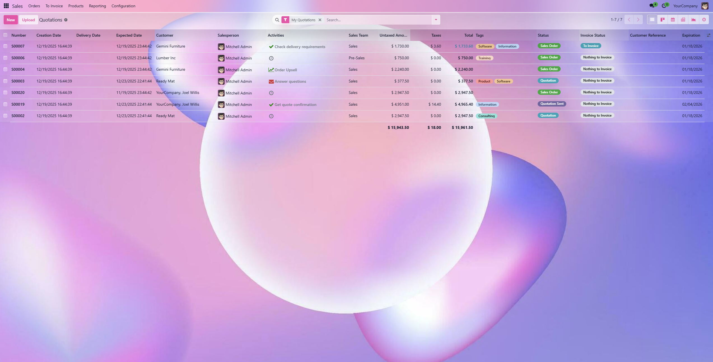

Backend Glassmorphism Theme
A modern glassmorphism-inspired theme for the Odoo
backend. It brings translucent surfaces, soft blur, and refined depth while
keeping the interface readable and calm.
Odoo 18 Community
Backend Theme
No Data Changes
Key Features
- Glassy background with pastel gradients and depth.
- Translucent panels for control panel, list, kanban, and chatter.
- Refined buttons, inputs, and dropdowns with soft highlights.
- Improved search autocomplete and popover readability.
- Glass-styled statusbar and notebook tabs.
Screenshot

Installation
- Copy the module into your custom addons path.
- Update Apps list and install "Backend Glassmorphism Theme".
- Refresh the browser with assets debug if needed.
Configuration
The theme is enabled once installed. You can tweak colors and transparency
from the SCSS files:
static/src/scss/glass_variables.scss for Odoo variables.static/src/scss/glassmorphism.scss for component styling.
Support
If you need adjustments for a specific view or component, update the SCSS
or contact the module author.